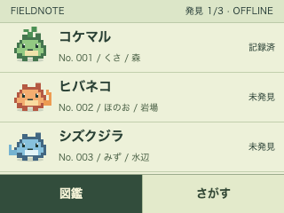
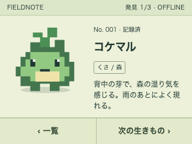
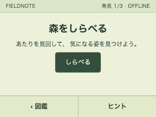
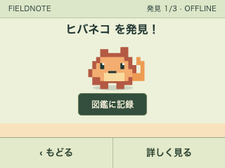
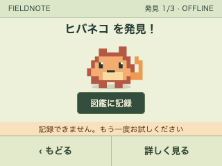
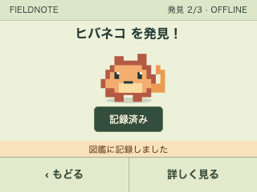

<!doctype html><html lang="ja"><meta charset="utf-8"><title>FIELDNOTE 実画面</title><style>*{box-sizing:border-box}body{margin:0;padding:20px;background:#152525;color:#e9f0dc;font:12px -apple-system,sans-serif;width:1032px}header{display:flex;justify-content:space-between;align-items:center;margin-bottom:20px}header strong{font-size:18px;letter-spacing:.04em}main{display:grid;grid-template-columns:repeat(3,320px);gap:18px 16px}figure{margin:0}figcaption{font-size:11px;margin:0 0 8px;color:#bdcdbb}img{width:320px;height:240px;display:block;image-rendering:pixelated}footer{font-size:10px;color:#aabdad;margin-top:20px}</style><header><strong>FIELDNOTE / DISPLAY STATES</strong><span>各画面 320 × 240 px</span></header><main><figure><figcaption>01　図鑑一覧</figcaption></figure><figure><figcaption>02　生きものの詳細</figcaption></figure><figure><figcaption>03　探索</figcaption></figure><figure><figcaption>04　発見・記録前</figcaption></figure><figure><figcaption>05　記録失敗</figcaption></figure><figure><figcaption>06　記録完了</figcaption></figure></main><footer>Webでの画面試作。実機の日本語フォント・タッチ操作・描画性能は未検証。筐体・紹介ページは含めていません。</footer></html>
